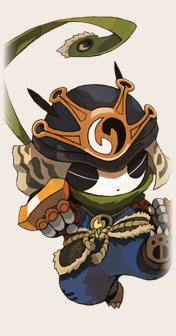
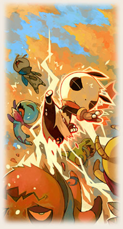
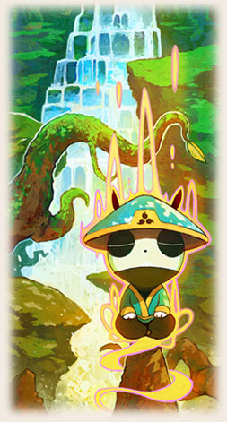

|  | แพนด้า จอมยุทธ์ผู้รักสันโดษจากบูรพาทิศ สุดยอดนักบู๊ที่ถนัดการทำคอมโบด้วย เพลงหมัดที่รวดเร็วและรุนแรง มีท่าที่เร่งการฟื้น SP ได้ ทำให้สามารถต่อคอมโบ ได้ยาวออกไป หากเพื่อนๆ ชอบการต่อสู้แบบทำคอมโบ ก็ควรเลือกเล่นแพนด้า ตัวนี้แหละครับ นอกจากนี้หากเพื่อนๆ เลือกแพนด้าเป็นกองสนับสนุนในทีมของเรา และ เรายังได้สกิลยืมพลังแพนด้ามาฟื้น SP ตัวเองด้วยนะ! |
|||||||||||||||||||||
|
||||||||||||||||||||||
|  | แพนด้าจากแดนตะวันออก ที่มีความสามารถในการต่อยเตะขั้นเทพ พร้อม ยามใดที่ เขาปลดปล่อยพลังขีดสุดก็จะเห็นเพียงเงาสีแดง ที่แลกหมัดกับศัตรูอย่างไม่คิดชีวิต จุดเด่นของ Strike Master อยู่ที่การคอมโบแบบต่อเนื่อง แถมยังมีสกิลที่สามารถ เพิ่ม SP ทำให้คอมโบได้ยาวนานกว่าตัวละครอื่นๆ |
|||||||||||||||||||||||||||||||||
|
||||||||||||||||||||||||||||||||||

|  | นักปราชญ์ผู้บรรลุถึงความเป็นไปในโลก ผู้เข้าใจถึงกฎของธรรมชาติแล้วประสาน เข้ากับวิชาต่างๆ ด้วยการเคลื่อนไหวที่รวดเร็วทำให้บางครั้งเขาแยกร่างออกมาได้ จุดเด่นของ Sage Fist อยู่ที่ความสามารถในเชิงหลบหลีกที่สูงขึ้น และยังถ่ายเท พลัง SP ให้แก่คนอื่นได้ด้วย ประกอบกับหมัดเมาอันน่ามึนงง ทำให้ศัตรูสับสน |
|||||||||||||||||||||||||||||
|
||||||||||||||||||||||||||||||